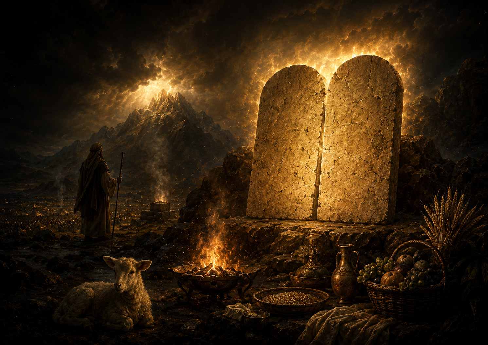

статья «Ритуальный Декалог», как иной Заветный текст от Р-источника (Шмот 34:10-26)
⬧ При внимательном анализе текста Торы рядом с привычным Декалогом Шмот 20 и Дварим 5 обнаруживается ещё один корпус «речений» — так называемый «ритуальный Декалог» из Шмот 34:10–26. В отличие от этико-заветного Декалога, здесь перед нами не универсальные моральные заповеди, а культово-аграрная программа Яхве: запрет чужих культов, праздники, первенцы, шаббат, первые плоды и правила жертвоприношений. По своему языку и тематике этот блок хорошо вписывается в древнюю J-традицию. [1] [2] [3]
Ниже — реконструкционная схема «ритуального Декалога» из Шмот 34:10–26. Сам текст не нумерует эти заповеди как «1–10», поэтому деление условное: оно показывает десять культово-ритуальных требований Завета.
| № | Русский текст | Иврит | Источник |
|---|---|---|---|
| 1 | Не заключай союза с жителями земли, в которую ты входишь; разрушь их жертвенники, разбей их мацевы и сруби их ашеры. |
הִשָּׁמֶר לְךָ פֶּן־תִּכְרֹת בְּרִית לְיוֹשֵׁב הָאָרֶץ... כִּי אֶת־מִזְבְּחֹתָם תִּתֹּצוּן וְאֶת־מַצֵּבֹתָם תְּשַׁבֵּרוּן וְאֶת־אֲשֵׁרָיו תִּכְרֹתוּן׃ |
שמות ל״ד:י״ב–י״ג |
| 2 | Не поклоняйся иному богу, потому что Яхве — Бог ревнивый. |
כִּי לֹא תִשְׁתַּחֲוֶה לְאֵל אַחֵר כִּי יְהוָה קַנָּא שְׁמוֹ אֵל קַנָּא הוּא׃ |
שמות ל״ד:י״ד |
| 3 | Не вступай в культовое и брачное смешение с народами земли, чтобы Израиль не пошёл за их богами. |
פֶּן־תִּכְרֹת בְּרִית לְיוֹשֵׁב הָאָרֶץ... וְאָכַלְתָּ מִזִּבְחוֹ׃ וְלָקַחְתָּ מִבְּנֹתָיו לְבָנֶיךָ... וְהִזְנוּ אֶת־בָּנֶיךָ אַחֲרֵי אֱלֹהֵיהֶן׃ |
שמות ל״ד:ט״ו–ט״ז |
| 4 | Не делай себе литых богов. |
אֱלֹהֵי מַסֵּכָה לֹא תַעֲשֶׂה־לָּךְ׃ |
שמות ל״ד:י״ז |
| 5 | Соблюдай праздник Мацот: семь дней ешь мацу в назначенное время месяца Авив, потому что в месяце Авив ты вышел из Египта. |
אֶת־חַג הַמַּצּוֹת תִּשְׁמֹר שִׁבְעַת יָמִים תֹּאכַל מַצּוֹת... כִּי בְּחֹדֶשׁ הָאָבִיב יָצָאתָ מִמִּצְרָיִם׃ |
שמות ל״ד:י״ח |
| 6 | Всё первородное принадлежит Яхве; первенца осла нужно выкупить, первенцев сыновей нужно выкупать, и нельзя являться перед Яхве с пустыми руками. |
כׇּל־פֶּטֶר רֶחֶם לִי... כֹּל בְּכוֹר בָּנֶיךָ תִּפְדֶּה וְלֹא־יֵרָאוּ פָנַי רֵיקָם׃ |
שמות ל״ד:י״ט–כ׳ |
| 7 | Шесть дней работай, а в седьмой день отдыхай; даже во время пахоты и жатвы отдыхай. |
שֵׁשֶׁת יָמִים תַּעֲבֹד וּבַיּוֹם הַשְּׁבִיעִי תִּשְׁבֹּת בֶּחָרִישׁ וּבַקָּצִיר תִּשְׁבֹּת׃ |
שמות ל״ד:כ״א |
| 8 | Совершай праздник Шавуот — первые плоды жатвы пшеницы, и праздник сбора урожая на рубеже года. |
וְחַג שָׁבֻעֹת תַּעֲשֶׂה לְךָ בִּכּוּרֵי קְצִיר חִטִּים וְחַג הָאָסִיף תְּקוּפַת הַשָּׁנָה׃ |
שמות ל״ד:כ״ב |
| 9 | Три раза в год все мужчины должны являться перед Господином Яхве, Богом Израиля. |
שָׁלֹשׁ פְּעָמִים בַּשָּׁנָה יֵרָאֶה כׇל־זְכוּרְךָ אֶת־פְּנֵי הָאָדֹן יְהוָה אֱלֹהֵי יִשְׂרָאֵל׃ |
שמות ל״ד:כ״ג–כ״ד |
| 10 | Не приноси кровь Моей жертвы вместе с квасным; жертва праздника Песах не должна оставаться до утра. Первые начатки земли приноси в дом Яхве, твоего Бога. Не вари козлёнка в молоке его матери. |
לֹא־תִשְׁחַט עַל־חָמֵץ דַּם־זִבְחִי וְלֹא־יָלִין לַבֹּקֶר זֶבַח חַג הַפָּסַח׃ רֵאשִׁית בִּכּוּרֵי אַדְמָתְךָ תָּבִיא בֵּית יְהוָה אֱלֹהֶיךָ לֹא־תְבַשֵּׁל גְּדִי בַּחֲלֵב אִמּוֹ׃ |
שמות ל״ד:כ״ה–כ״ו |
◊ Насколько вероятно прочитать «ритуальный Декалог» как альтернативные десять заповедей?
1. Композиция глав. После истории золотого тельца Моше снова поднимается на гору, снова получает скрижали, и Яхве снова заключает Завет. Затем в Шмот 34:27–28 сказано: «запиши себе эти слова», потому что «по этим словам» заключён Завет, а далее появляется формула «слова Завета, десять речений» — диврей га-брит, асерет га-дварим (דִּבְרֵי הַבְּרִית עֲשֶׂרֶת הַדְּבָרִים). Если читать текст последовательно, то ближайшие «эти слова» — это именно предписания Шмот 34:10–26. Поэтому у читателя возникает естественное ощущение: перед нами не просто дополнение к Декалогу Шмот 20, а другой набор заветных речений, связанный со скрижалями. [4]
2. Структура Шмот 34:6–17 близка не ко всему позднему Декалогу Шмот 20 / Дварим 5, а прежде всего к его начальному культовому ядру. Так мы можем сопоставить тексты:
| Декалог Шмот 20:2–6 |
שמות כ׳:ב׳–ו׳ | Шмот 34:6–17 | שמות ל״ד:ו׳–י״ז |
|---|---|---|---|
| (2) Я — Яхве, твой Бог, Который вывел тебя из земли Египетской, из дома рабства. |
אָנֹכִי יְהוָה אֱלֹהֶיךָ
אֲשֶׁר הוֹצֵאתִיךָ מֵאֶרֶץ מִצְרַיִם מִבֵּית עֲבָדִים׃ |
(14) Ведь имя Его — Яхве-Ревнитель; Он Бог ревнивый. |
כִּי יְהוָה קַנָּא שְׁמוֹ אֵל קַנָּא הוּא׃ |
| (3) Да не будет у тебя других богов предо Мною. |
לֹא יִהְיֶה־לְךָ אֱלֹהִים אֲחֵרִים עַל־פָּנָי׃ |
(14) Не поклоняйся иному богу. |
כִּי לֹא תִשְׁתַּחֲוֶה לְאֵל אַחֵר |
| (4) Не делай себе изваяния и никакого изображения того, что на небе вверху, что на земле внизу и что в водах ниже земли. |
לֹא תַעֲשֶׂה־לְךָ פֶסֶל וְכׇל־תְּמוּנָה
אֲשֶׁר בַּשָּׁמַיִם מִמַּעַל וַאֲשֶׁר בָּאָרֶץ מִתָּחַת וַאֲשֶׁר בַּמַּיִם מִתַּחַת לָאָרֶץ׃ |
(17) Не делай себе литых богов. |
אֱלֹהֵי מַסֵּכָה לֹא תַעֲשֶׂה־לָּךְ׃ |
|
(5) Не поклоняйся им и не служи им, потому что Я, Яхве,
твой Бог, Бог ревнивый, взыскивающий вину отцов с сыновей
до третьего и четвёртого поколения у ненавидящих Меня.
(6) И творящий милость до тысячного поколения любящим Меня и соблюдающим Мои заповеди. |
לֹא־תִשְׁתַּחֲוֶה לָהֶם וְלֹא תׇעׇבְדֵם
כִּי אָנֹכִי יְהוָה אֱלֹהֶיךָ אֵל קַנָּא פֹּקֵד עֲוֺן אָבֹת עַל־בָּנִים עַל־שִׁלֵּשִׁים וְעַל־רִבֵּעִים לְשֹׂנְאָי׃ וְעֹשֶׂה חֶסֶד לַאֲלָפִים לְאֹהֲבַי וּלְשֹׁמְרֵי מִצְוֺתָי׃ |
(6) Яхве прошёл перед ним и возгласил:
«Яхве, Яхве, Бог милосердный и милостивый,
долготерпеливый, великий в любви и верности.
(7) Хранящий милость для тысяч, прощающий вину, преступление и грех, но не оставляющий без наказания, взыскивающий за вину отцов с детей и с внуков — до третьего и четвёртого поколения». |
וַיַּעֲבֹר יְהוָה עַל־פָּנָיו וַיִּקְרָא
יְהוָה יְהוָה אֵל רַחוּם וְחַנּוּן אֶרֶךְ אַפַּיִם וְרַב־חֶסֶד וֶאֱמֶת׃ נֹצֵר חֶסֶד לָאֲלָפִים נֹשֵׂא עָוֺן וָפֶשַׁע וְחַטָּאָה וְנַקֵּה לֹא יְנַקֶּה פֹּקֵד עָוֺן אָבוֹת עַל־בָּנִים וְעַל־בְּנֵי בָנִים עַל־שִׁלֵּשִׁים וְעַל־רִבֵּעִים׃ |
Из этого сопоставления видно, что Декалог (Шмот 20:2–6) и текст Шмот 34:6–17 имеют общее культово-богословское ядро: Яхве предъявляет Себя как Бога Израиля, требует исключительной верности, запрещает иных богов и культовые изображения, а также описывается как Бог ревнивый, милующий до тысяч и взыскивающий вину до третьего и четвёртого поколения. Это говорит о том, что оба текста опираются на одну древнюю яхвистскую идеологию: Завет строится прежде всего не вокруг абстрактной морали, а вокруг Яхве, чистоты Его культа и разрыва с чужими богами.
3. Важность текста Шмот 34:10–26 становится особенно заметной, если сравнить его с культово-правовым блоком в Шмот 23:14–19, входящим в «Книгу Завета». Последняя часть Шмот 34 почти дословно повторяет этот материал:
| Шмот 34:18–26 | שמות ל״ד | Шмот 23:15–19 | שמות כ״ג |
|---|---|---|---|
| (18) Соблюдай праздник Мацот: семь дней ешь мацу в назначенное время месяца Авив, потому что в месяце Авив ты вышел из Египта. |
אֶת־חַג הַמַּצּוֹת תִּשְׁמֹר שִׁבְעַת יָמִים תֹּאכַל מַצּוֹת... כִּי בְּחֹדֶשׁ הָאָבִיב יָצָאתָ מִמִּצְרָיִם׃ |
(15) Соблюдай праздник мацы. Как Я и повелел тебе, семь дней ешь мацу — в положенное время, в месяце Авив, ведь в этом месяце ты вышел из Египта. Да не появится никто предо Мной с пустыми руками! |
אֶת־חַג הַמַּצּוֹת תִּשְׁמֹר שִׁבְעַת יָמִים תֹּאכַל מַצּוֹת
כַּאֲשֶׁר צִוִּיתִךָ לְמוֹעֵד חֹדֶשׁ הָאָבִיב כִּי־בוֹ יָצָאתָ מִמִּצְרָיִם וְלֹא־יֵרָאוּ פָנַי רֵיקָם׃ |
| (22) Совершай праздник Шавуот — первые плоды жатвы пшеницы, и праздник сбора урожая на рубеже года. |
וְחַג שָׁבֻעֹת תַּעֲשֶׂה לְךָ בִּכּוּרֵי קְצִיר חִטִּים וְחַג הָאָסִיף תְּקוּפַת הַשָּׁנָה׃ |
(16) Совершай праздник жатвы — первые плоды твоего труда, того, что ты посеял в поле, и праздник сбора плодов на исходе года, когда уберёшь с поля плоды своих трудов. |
וְחַג הַקָּצִיר בִּכּוּרֵי מַעֲשֶׂיךָ אֲשֶׁר תִּזְרַע בַּשָּׂדֶה וְחַג הָאָסִף בְּצֵאת הַשָּׁנָה בְּאָסְפְּךָ אֶת־מַעֲשֶׂיךָ מִן־הַשָּׂדֶה׃ |
| (23) Три раза в год все мужчины должны являться перед Господином Яхве, — Богом Израиля. |
שָׁלֹשׁ פְּעָמִים בַּשָּׁנָה יֵרָאֶה כׇל־זְכוּרְךָ אֶת־פְּנֵי הָאָדֹן יְהוָה אֱלֹהֵי יִשְׂרָאֵל׃ |
(17) Три раза в год все ваши мужчины должны являться перед Господином, Яхве. |
שָׁלֹשׁ פְּעָמִים בַּשָּׁנָה יֵרָאֶה כׇּל־זְכוּרְךָ אֶל־פְּנֵי הָאָדֹן יְהוָה׃ |
| (25) Не приноси кровь Моей жертвы вместе с квасным. | לֹא־תִשְׁחַט עַל־חָמֵץ דַּם־זִבְחִי | (18) Не приноси кровь Моей жертвы вместе с квасным. | לֹא־תִזְבַּח עַל־חָמֵץ דַּם־זִבְחִי |
| И пусть не остаётся до утра жертва праздника Песах. | וְלֹא־יָלִין לַבֹּקֶר זֶבַח חַג הַפָּסַח׃ | И пусть не остаётся жир Моей праздничной жертвы до утра. | וְלֹא־יָלִין חֵלֶב־חַגִּי עַד־בֹּקֶר׃ |
| (26) Первые начатки плодов твоей земли приноси в дом Яхве, твоего Бога. | רֵאשִׁית בִּכּוּרֵי אַדְמָתְךָ תָּבִיא בֵּית יְהוָה אֱלֹהֶיךָ | (19) Первые начатки плодов твоей земли приноси в дом Яхве, твоего Бога. | רֵאשִׁית בִּכּוּרֵי אַדְמָתְךָ תָּבִיא בֵּית יְהוָה אֱלֹהֶיךָ |
| Не вари козлёнка в молоке его матери. | לֹא־תְבַשֵּׁל גְּדִי בַּחֲלֵב אִמּוֹ׃ | Не вари козлёнка в молоке его матери. | לֹא־תְבַשֵּׁל גְּדִי בַּחֲלֵב אִמּוֹ׃ |
Это означает, что перед нами не случайный текст, и не второстепенная приписка, а устойчивый и значимый текстовый комплекс, который редакторы Торы сочли нужным сохранить в разных композиционных местах. В Шмот 23 он стоит внутри «Книги Завета» (Шмот гл. 21-23) как набор культовых предписаний, а в Шмот 34 тот же материал помещён в драматический контекст обновления Завета после золотого тельца. Такое повторение показывает, что этот блок имел высокий авторитет: он выражал базовую яхвистскую программу служения Яхве через праздники, первые плоды, жертвы и культовую исключительность.
4. Сам текст в Шмот 34:27 прямо связывает эти предписания с основанием Завета:
| Шмот 34:27 | И сказал Яхве Моше: «Запиши себе эти слова, ибо согласно этим словам Я заключил Завет с тобой и с Израилем». | וַיֹּאמֶר יְהוָה אֶל־מֹשֶׁה כְּתׇב־לְךָ אֶת־הַדְּבָרִים הָאֵלֶּה כִּי עַל־פִּי הַדְּבָרִים הָאֵלֶּה כָּרַתִּי אִתְּךָ בְּרִית וְאֶת־יִשְׂרָאֵל׃ | שמות ל״ד:כ״ז |
Здесь важно выражение «эти слова» — они естественно отсылают назад к блоку Шмот 34:10–26, то есть к предписаниям верности Яхве, запрете чужих культов, праздниках, первенцах, шаббате, жертвах и первых плодах. Следовательно, в логике этого редакционного слоя именно данный культово-ритуальный корпус оказывается не второстепенным приложением, а основанием союза между Яхве и Израилем.
4.1 Более того именно здесь в Шмот 34:28 впервые появляется формула: «слова Завета, десять речений» — диврей га-брит, асерет га-дварим (דִּבְרֵי הַבְּרִית עֲשֶׂרֶת הַדְּבָרִים).
| Шмот 34:28 | И был он там с Яхве сорок дней и сорок ночей: хлеба не ел и воды не пил. И он записал на скрижалях слова Завета — десять речений. | וַיְהִי־שָׁם עִם־יְהוָה אַרְבָּעִים יוֹם וְאַרְבָּעִים לַיְלָה לֶחֶם לֹא אָכַל וּמַיִם לֹא שָׁתָה וַיִּכְתֹּב עַל־הַלֻּחֹת אֵת דִּבְרֵי הַבְּרִית עֲשֶׂרֶת הַדְּבָרִים׃ | שמות ל״ד:כ״ח |
В непосредственном контексте эта формула стоит не после стандартного текста Декалога (Шмот 20:2-14), а после культово-ритуального блока Шмот 34:10–26. Так автор или редактор данного слоя мог понимать именно эти ритуальные предписания как «десять речений» Завета. Иными словами, выражение «десять речений» здесь работает не как заголовок к Шмот 20, а как итоговая формула к Шмот 34.
Однако есть важный аргумент против того, чтобы понимать «ритуальный Декалог» Шмот 34:10–26 как полноценную альтернативу обычному Декалогу Шмот 20 / Дварим 5. Деутерономистический историк в Дварим сам дважды обрамляет Синайское откровение формулой «десять речений» — асерет га-дварим (עֲשֶׂרֶת הַדְּבָרִים): сначала перед пересказом Декалога в Дварим 4:13, а затем после него в Дварим 10:4. Тем самым Dtr однозначно показывает, что под «десятью речениями» он понимает именно тот корпус, который затем звучит в Дварим 5:6–18: «Я — Яхве…». Поэтому для деутерономистической традиции Синайское откровение — это не ритуальный блок Шмот 34, а однозначно обычный Декалог = Дварим 5:6–18.
Также сам текст Шмот 34:10–26 не нумерует предписания как десять. Чтобы получить десять, исследователь вынужден объединять одни законы и разделять другие. Например, запрет союзов с жителями земли можно считать одной заповедью, а можно разделить на несколько: не заключай союз, разрушь жертвенники, не поклоняйся иному богу, не вступай в браки. То же самое с финальным блоком о крови жертвы, первых плодах и козлёнке в молоке матери. Поэтому «ритуальный Декалог» — это реконструкция, но не очевидная нумерация самого текста Торы. [5]
◊ Так что делает текст ритуального Декалог в сюжете скрижалей Завета?
В сюжете скрижалей Завета «ритуальный Декалог» Шмот 34:10–26 выполняет особую редакционную функцию. Если реконструировать логику жреческого / поздне-редакционного слоя, то он не просто сохраняет древний культовый список, а помещает его в самое сильное место повествования — туда, где речь идёт о разбитых и вновь написанных скрижалях. Сначала в Шмот 20 Декалог уже переосмыслен в жреческо-космологическом ключе: особенно это видно в заповеди о шаббате (שַׁבָּת), где покой объясняется не Исходом, а творением мира за шесть дней и освящением седьмого дня (см. Декалог в двух редакциях). Затем скрижали разбиваются после золотого тельца, и на вторых скрижалях появляется уже другой заветный акцент — культово-ритуальный блок Шмот 34.
Жреческий редактор, опираясь на более древний яхвистский культовый материал, выстраивает собственную историю Заветного текста. В этой логике он не просто сохраняет Шмот 34:10–26 как набор ритуальных предписаний, а помещает его в центр сюжета о вторых скрижалях и обновлении Завета после золотого тельца. Поэтому привычный Декалог (Дварим 5:6–18) как бы отодвигается на второй план, а в Шмот 34 на место главного Заветного текста между Яхве и Израилем выходит культово-ритуальный блок: запрет чужих богов, запрет литых образов, праздники, первые плоды, жертвы и чистота служения. Именно поэтому Жреческий редактор пишет: «ибо согласно этим словам Я заключил Завет» (Шмот 34:27), а затем переносит сюда же формулу «десять речений» (עֲשֶׂרֶת הַדְּבָרִים) — в Шмот 34:28. Его не интересует сколько в ритуальном Декалоге заповедей, его интересует перенос акцента, на "новый" заветынй текст - Шмот 34:10-26. [6] [7]
𐎀 Историк и Жрец 𐎀
В итоге перед нами две разные стратегии понимания Заветного текста между Израилем и Богом. Деутерономистический историк в Дварим понимает их как обычный Декалог: именно к Дварим 5:6–18 он относит формулу асерет га-дварим (עֲשֶׂרֶת הַדְּבָרִים), то есть «десять речений». Для него Синайское откровение — это прежде всего историко-заветная конституция Израиля: Яхве вывел народ из Египта, поэтому Израиль обязан жить как народ Завета, хранить верность Яхве, помнить рабство, соблюдать шаббат и строить справедливую общину.
Жречески ориентированный редактор работает иначе. Он не отменяет обычный Декалог, но переосмысляет весь сюжет скрижалей и переносит центр внимания на другой заветный текст — Шмот 34:10–26. Этот блок, основанный на древнем яхвистском культовом материале, оказывается помещён в сцену вторых скрижалей, после греха золотого тельца и обновления Завета. Поэтому здесь главным становится не социальная конституция Израиля, а культовая верность Яхве.
⤷ Сноски